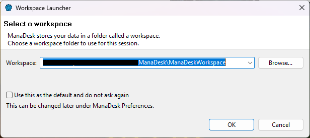
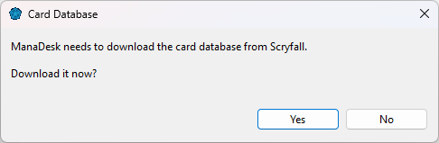
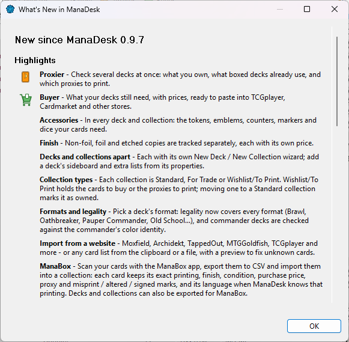

The first time you start ManaDesk, it asks two things: where to keep your data, and whether to download the card database.
The workspace is the folder where ManaDesk keeps everything: your decks, your collections,
your settings and the card database. By default it is ManaDeskWorkspace in your home
folder.

If you don't want to see this dialog at every start, check Use this as the default and do not ask again. To get it back later, check Show workspace selection dialog at startup in .
ManaDesk uses the card data published by Scryfall. On a new workspace, ManaDesk offers to download it. The download and the setup take about a minute, in the background — you can keep using ManaDesk while it runs.

No internet connection? Download the Scryfall Default Cards bulk file on another computer and use . See Updating the card database.
After an upgrade, ManaDesk shows once what is new in that version, and adds the tabs of any new view. You can open it again any time with .

See also: Your workspace · Updating the card database